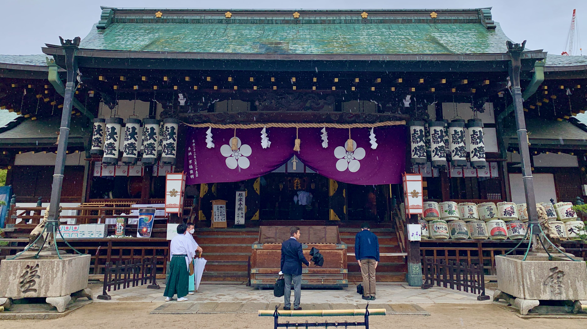

Harmonization
In music, a melody is a sequence of individual notes, while chords bring multiple notes together at once. Harmonization is the process of developing chords that accompany and support a melody (“Harmonization”). This relationship suggests that harmony does not require sameness; rather, it emerges from the intentional combination of distinct elements. Music thus offers a useful metaphor for thinking about harmony more broadly: not as the absence of tension or difference, but as the possibility of arranging distinct elements in ways that allow them to coexist meaningfully.
As a concept expressed through actions and attitudes, harmonization involves making different elements more compatible with one another. It can encompass qualities such as alignment, adaptability, agility, fluidity, resilience, and acceptance (“Harmonization”). These qualities can reinforce one another: fluidity may enable greater agility, while agility and fluidity can support alignment; alignment, in turn, can strengthen adaptability and resilience. Acceptance may emerge from developing confidence in this ongoing process of adjustment. To practice harmonization is, then, to acknowledge forces beyond our control, let go of what no longer serves us, and create space for what might. In this sense, harmonization resembles the relationship between melody and harmony: rather than eliminating difference, it involves responding to and working with difference in ways that allow distinct elements to coexist.
For other harmonization methods, we can look to approaches stemming from logotherapy, created by Austrian psychologist, neurologist, philosopher, and Holocaust survivor Viktor Frankl. Reflecting on his three years imprisoned in Nazi concentration camps, Frankl described a sense of meaning as an important source of psychological endurance under conditions of extreme suffering (36). Logotherapeutic techniques for finding meaning within adversity have also been used in modern medical settings combined with dereflection (having the patient shift the focus off of problems to prevent rumination) and Socratic questioning (asking questions to help a patient explore deeper sources of meaning in their lives; Mortell 40). Combining such techniques has been shown to minimize despair associated with life circumstances (Mortell 41).
For other harmonization methods, we can look to approaches stemming from logotherapy, created by Austrian psychologist, neurologist, philosopher, and holocaust survivor Viktor Frankl. In the three years Frankl spent imprisoned in Nazi concentration camps, he observed that the prisoners who retained a sense of meaning in their lives survived under the most brutal conditions imaginable, while those who did not perished (Frankl 36). Logotherapeutic techniques for finding meaning within suffering have also been used in modern medical settings combined with dereflection (having the patient shift the focus off of problems to prevent rumination) and Socratic questioning (asking questions to help a patient explore their deeper life's meaning; Mortell 40). Combining such techniques has been shown to minimize despair associated with life circumstances (Mortell 41).
Cross-cultural research suggests that many Western, Educated, Industrialized, Rich, and Democratic (WEIRD) populations tend toward more analytic or linear modes of cognition, while some East Asian populations show greater tendencies toward holistic and dialectical reasoning that can accommodate apparently contradictory perspectives (Lomas 50). In his article "Life Balance and Harmony: Wellbeing's Golden Thread," Tim Lomas discusses how balance and harmony combine to create personal well-being. Lomas explains that balance describes the quality of the relationship between two dialectically related phenomena, and harmony represents the dynamic coordination of multiple such balancing acts with well-being resulting from optimal balance (51).
Possessing a sense of meaning may be fundamental to how people endure and make sense of suffering. Taken together, these perspectives suggest that harmonization is less about eliminating difficulty than about developing the capacity to respond to it by finding the meaning within circumstances that cannot always be changed, adapting without losing a sense of agency, and holding seemingly opposing experiences in relationship with one another. A balanced integration of Eastern and Western approaches to meaning-making may therefore offer one path toward more resilient forms of well-being. Like harmony in music, this kind of harmonization does not depend on removing differences or resolving every tension. Instead, it may involve learning how distinct and sometimes conflicting elements can be held together in ways that create meaning and a greater sense of coherence. As Friedrich Nietzsche once wrote, “He who has a why to live for can bear almost any how” (qtd. in Frankl 78).
Works Cited
Frankl, Viktor E. Man's Search for Meaning. Beacon Press, 2006.
"Harmonization." Oxford English Dictionary Online, 1898, https://www.oed.com/dictionary/harmonization_n. Accessed 26 April 2024.
Lomas, Tim. “Life Balance and Harmony: Wellbeing’s Golden Thread.” International Journal of Wellbeing, vol. 11, no. 1, 2021, pp. 50–68, https://doi.org/10.5502/ijw.v11i1.1477.
Mortell, Susan. “Logotherapy to Mitigate the Harmful Psychological Effects of Current Events: A Tool for Nurses.” Journal of Psychosocial Nursing and Mental Health Services, vol. 58, no. 4, 2020, pp. 38–42, https://doi.org/10.3928/02793695-20200127-01.
Wong, Paul T. P., and Victoria Bowers. “Mature Happiness and Global Wellbeing in Difficult Times.” Scientific Concepts Behind Happiness, Kindness, and Empathy in Contemporary Society, edited by N. R. Silton, IGI Global, 2019, pp. 112–34, https://doi.org/10.4018/978-1-5225-5918-4.ch006.
Pictured above
Walker, Coire: Photograph of Osaka-Temmangu Shrine, Osaka, Japan. 25 Apr. 2023. Author's personal collection.